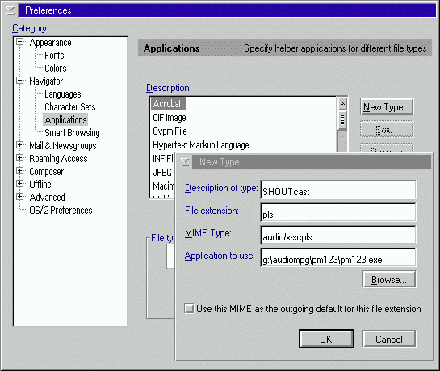

The procedure explains in details how to configure Netscape Navigator 4.x and Mozilla in OS/2. The MIME Types are the same than the ones that can be used in Netscape 2.x, but the menus and configuration dialogs are not the same.
To configure Netscape Navigator 4.x or Mozilla for OS/2 to use PM123 as a helper application for M3U type playlists, you will have to add the MIME type "audio/x-mpegurl". And for SHOUTcast type playlists, you will have to add the type "audio/x-scpls". To add MIME Types, follow this procedure:
NOTE: Netscape Navigator 4.x and Mozilla do not switch the session's path to the EXE's path. Therefore, PM123 will not be able to find gbm123.dll and other DLLs installed by default in the PM123's directory. You will have to start PM123 in advance (thus preloading all needed DLLs) or you will have to add PM123's path to your LIBPATH CONFIG.SYS.

Recommended settings
Description of type: MP3 PlaylistTest it at SHOUTcast!
File extension: M3U PLS LST
MIME Type: audio/x-mpegurl
Application to use: x:\path\pm123.exe
Description of type: SHOUTcast
File extension: PLS
MIME Type: audio/x-scpls
Application to use: x:\path\pm123.exe